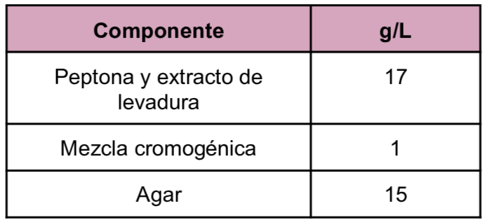
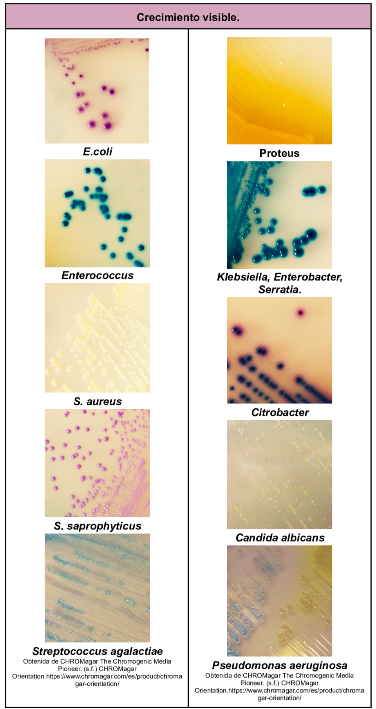

Es un medio de cultivo cromogénico de tipo no selectivo que es utilizado para la detección cualitativa directa, la diferenciación e identificación presuntiva de uropatógenos para apoyar en el diagnóstico de las infecciones del tracto urinario con el diferente desarrollo de coloración en las colonias.
Composición

pH a 25°C 7.0±0.2
Resultados Posibles
Las coloraciones que desarrollan los diferentes uropatógenos dependen del microorganismo
E. coli:
Rosa oscuro a rojizo.
Enterococcus:
Azul turquesa.
Proteus:
Halo marrón
Klebsiella, Enterobacter, Serratia:
Azul metálico.
Citrobacter:
Azul metálico con halo rojo.
S. saprophyticus:
Rosa, opaco pequeño.
Candida albicans:
Incoloro.
Streptococcus agalactiae:
Azul claro.
Pseudomonas aeruginosa:
Translúcido, crema a azul.

Referencias
CHROMagar The Chromogenic Media Pioneer. (s.f.) CHROMagar Orientation.https://www.chromagar.com/es/product/chromagar-orientation/